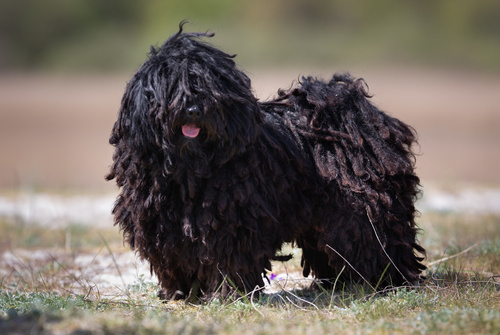

Egy szimpatikus kis bozontos
A ravasz puli kutya és a jóval nagyobb komondor közös vonásai az egyedülálló raszta szőrzet és a magyar terelőkutya ősök. Időközben mindkét kutyafajta sok rajongóra tett szert Magyarországon kívül is. Ha valaki egy puli kutyát szeretne háziállatként, annak figyelembe kell vennie, hogy ez a fajta nagyon sok mozgást igényel, szélben és esőben egyaránt.
Magyar kutya, ázsiai gyökerekkel
A komondor és a puli kutya hasonlósága nem a véletlen műve: Ahogyan a nagyobb testvér ősei, valószínűleg a puli ősei is 1000 évvel ezelőtt, a magyarokkal együtt érkeztek Ázsiából Magyarországra. A fajta gyökereit tibetinek vélik, mivel nagy hasonlóságot mutat a tibeti terrierrel. Ezen kívül közeli rokona még a pumi is. Magyarországon a rasztás kutyákat elsősorban kisebb állatok, mint juhok és baromfik terelésére és őrzésére használták. Először 1751-ben említették írásban ezt a fajtát. Magyarországon a tenyésztés a fajta munkakutya tulajdonságaira összpontosult. Az FCI 1935-ben ismerte el hivatalos fajtaként és ezzel együtt a minden országra érvényes standardot is felállította. Manapság már hazáján kívül is találkozhatunk ezzel a kivételes kutyával, méghozzá családi kutyaként.